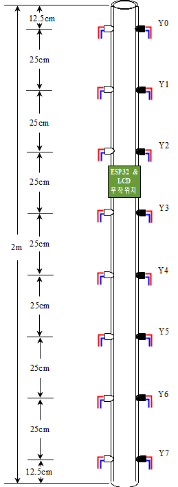
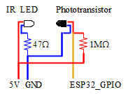
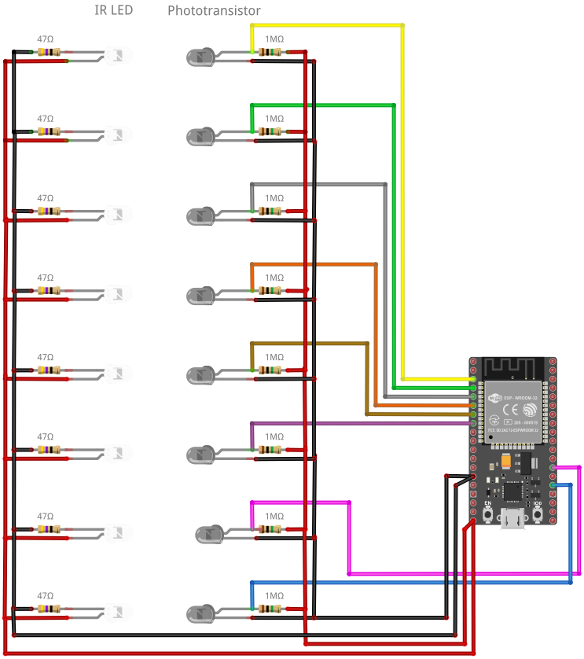

de la Cruz a la fecha
Welcome to "STEM with"
Welcome to “STEM with”
Arduino
- Arduino 시작하기
- Arduino TM1637 모듈 사용하기
- Arduino, 온도측정(DS18b20)
- Arduino, 1602LCD (I2C)
- Arduino, IR 리모컨
- Arduino, 키패드 사용하기
- Arduino, 서보모터
- 7 Segment (FND) 사용하기
- 1602 LCD Display, 조도, 초음파, 온습도센서
- Processing 기초
- Bluetooth Serial Controller 앱
- Blynk에 센서값 출력하기
- Arduino, Bluetooth, Blynk
- Arduino, Bluetooth 페어링
- Arduino, 라인트레이서, L298N
- DC모터 4WD 자동차 만들기 (TB6612FNG)
- 4WD Bluetooth
ESP32
- ESP32-WROOM-32D DevkitC V4
- ESP32 Board Installation in Arduino IDE
- ESP32 LED
- ESP32 PWM제어
- ESP32 ADC
- ESP32 BLE, Blynk Button
- ESP32 BLE, Blynk Slider (PWM)
- ESP32 BLE, Blynk Gauge
- ESP32 OpenWeatherMap에서 실시간 날씨 정보 받기
Science Experiment
Blynk, IoT
- Arduino, Bluetooth 시리얼 통신
- Blynk에 센서값 출력하기
- Arduino, Bluetooth, Blynk
- ESP32 BLE, Blynk Button
- ESP32 BLE, Blynk Slider (PWM)
- ESP32 BLE, Blynk Gauge
Drone
RC, LineTracer
Excel, Office
Do It Yourself
Hello World
Welcome to Hexo! This is your very first post. Check documentation for more info. If you get any problems when using Hexo, you can find the answer in troubleshooting or you can ask me on GitHub.
Quick Start
Create a new post
1 | $ hexo new "My New Post" |
More info: Writing
Run server
1 | $ hexo server |
More info: Server
Generate static files
1 | $ hexo generate |
More info: Generating
Deploy to remote sites
1 | $ hexo deploy |
More info: Deployment
ESP32, 중력 가속도 측정
중력 가속도 측정
중력(Gravitational Force)
뉴턴은 달의 운동과 케플러의 법칙을 통해, 달과 지구 사이에 작용하는 힘은 지구의 질량과 달의 질량의 곱에 비례하고 거리의 제곱에 반비례한다는 만유인력의 법칙을 밝혔다.
만유인력 상수값은 다음과 같다. (캐번디시에 의해 측정된 G값은 6.674)
만유인력이 지상의 물체에 작용되는 경우, 이때 작용하는 힘을 중력이라고 한다.
중력 가속도(Gravitational Acceleration)
위 식에서 관성 질량(m_i)과 중력 질량(m)이 같다는 등가원리를 적용하면 중력 가속도는 작은 물체의 질량 m에 무관하게 된다.
지구의 질량 M과 지구 반지름 R은 지표면의 물체에 비해 매우 크고, 거의 구에 가까우므로, 위 식을 사용하여 지구 표면에서의 중력 가속도 g 값을 구할 수 있다.
등가속도 직선 운동
가속도의 크기와 방향이 일정한 직선 운동으로, 속도가 일정하게 증가하거나 감속하는 직선 운동을 의미한다. 자유낙하의 경우 초기속도가 0인 물체를 중력장에 낙하시킬 때 중력가속도를 받으며 낙하하는 물체의 운동이며, 공기의 저항이 없다고 가정할 경우 등가속도 직선 운동이 된다.
등가속도 직선 운동과 관련된 공식은 다음과 같다.
이 3가지 기본 공식을 통해 다양한 형태의 공식을 유도할 수도 있다.
①, ②식을 조합하면
③식에서 초기속도(v_0)가 0인 경우
②식을 변형하면
중력 가속도 계산
-
이번 실험에서는 2m 길이의 파이프에 25cm 간격으로 센서를 배치하고, 낙하하는 물체가 센서를 지날때마다 시간을 기록할 것이다. 변위와 시간을 측정할 수 있으므로 초기속도(v_0)값만 알면 ⑥을 이용하여 중력 가속도를 계산할 수 있다.
-
가장 쉬운 방법은 초기 속도가 0이 되도록 하기 위해 첫번째 센서를 파이프의 최상단에 배치하는 것이다. 단, 이렇게 할 경우 실험 과정에서 낙하시킬 물체를 놓을 때 물체를 잡고 있는 손가락의 영향을 제거하기 어려우며, 이 문제에 기인하는 오차는 큰 편이라고 할 수 있다.
-
그래서 첫번째 센서를 최상단으로부터 12.5cm 정도 아래로 내려 설치하였다. 센서가 측정하는 시간은 온전히 자유낙하하는 상태에서 측정되므로 비교적 정확하게 측정할 수 있다. 문제는 첫번째 센서 위치에서의 초기 속도(v_0)값이 0이 아니므로 이 값을 별도로 계산하여야 한다.
-
이 값은 ③으로부터 계산할 수 있는데,
- 파이프 최상단에서의 초기 속도(v_0)는 이므로, 12.5cm만큼 낙하하여 첫번째 센서에 반응할 때의 속도(v)값은 ⑤로 부터 구할 수 있다.
- 이 값이 12.5cm 위치에 첫번째 센서를 설치한 실험기구를 사용하는 경우, ⑥에서의 초기 속도(v_0)값이 된다. 파이프에 설치한 센서의 번호를 n이라고 하면, ⑥은 다음과 같이 쓸 수 있다.
- s는 각 센서가 위치한 곳까지 물체가 이동한 변위이며, 8개의 센서를 사용하여 낙하하는 물체가 센서와 반응하는 시간(t_n)을 측정하고, 이를 ⑥에 대입하면 가속도(a_n)를 계산할 수 있다. 각 지점에서의 가속도를 평균계산하여 중력가속도를 구한다.
| 센서 | 0 | 1 | 2 | 3 | 4 | 5 | 6 | 7 |
|---|---|---|---|---|---|---|---|---|
| s_n (m) | 0.125 | 0.375 | 0.625 | 0.875 | 1.125 | 1.375 | 1.625 | 1.875 |
| t_n | ||||||||
| a_n |
이 실험의 한계
- 이 실험의 목적은 자유 낙하하는 물체를 통해 중력 가속도를 측정하는 것이다. 그런데, 중력 가속도를 계산하는 중간 과정 ⑤에서, 초기 속도(v_0=1.5658m/s) 값을 계산하기 위해 이미 중력 가속도 값인 9.80665m/s²를 사용한 것은 이 실험의 목적을 벗어나는 것이라고 볼 수 있다.
- 그렇지만, 여기서는 각 센서를 통해 측정되는 값으로 계산해낸 중력 가속도의 평균 값이 어느 정도되는지 확인해보고, 실제값과 어느 정도의 오차를 보이는지를 확인하는 교육 목적을 갖고 사용하는 것임을 감안할 필요가 있다. 이를 근거로 중력 가속도 값을 이용하여 계산한 첫번째 센서위치에서의 초기 속도 값을 기본 보정값의 개념으로 사용하고자 한다.
- 이러한 방법이 합당하지 않다고 생각한다면, 초기 속도(v_0)가 0이 되도록 센서를 파이프의 최상단에 배치하고, 물체가 손에서 떨어짐과 동시에 첫번째 센서에 반응하도록 낙하시키는 위치를 정확하게 조절하며 실험해야 한다.
실험 장치 만들기
파이프 준비
- 길이 2m 투명 아크릴 파이프(내경 3.5cm)에 구간 거리가 **0.25m(=25cm)**가 되도록 일정하게 IR LED를 배치하고 고정한다.

센서 장착
-
맨 위쪽과 아래쪽에는 12.5cm정도 띄우고 IR LED와 Phototransistor를 배치함
- 손에서 낙하물을 놓을 때, 낙하물이 바닥에 닿을 때, 낙하시간에 영향을 주는 요소를 제거하기 위함
-
IR LED와 Phototransistor가 서로 정확하게 마주 볼 수 있는 위치에 유성펜을 사용하여 표시한다.
-
드릴을 이용하여 아크릴 파이프에 지름 5mm의 구멍을 뚫는다.
- 아크릴이 파손되지 않도록 유의한다. 이를 위해 먼저 작은 지름(1~2mm)의 드릴비트를 이용하여 작은 구멍을 뚫은 뒤, 그 구멍에 5mm 드릴비트를 사용하여 LED가 들어갈 구멍을 다시 뚫는 것이 좋다.
-
IR LED와 Phototransistor를 구멍에 넣고 글루건을 사용하여 고정한다.
- 글루건이 IR LED와 Phototransistor의 앞부분에 뭍지 않도록 주의
- 글루건이 손에 뭍으면 화상을 입을 수 있으므로 주의
배선
- 각 센서 층마다 저항과 전원선과 데이터선을 다음과 같이 연결한다.

-
IR LED
-
부품번호 및 제조회사가 표기되어 있지 않아 정확히 어떤 제품인지 알 수 없어, Everlight사의 IR333-A (940nm, 직경5mm)의 Datasheet를 참고하였다.
-
Forward Current 100mA, Forward Voltage 1.5V
-
5V를 전원으로 사용하는 경우
그러므로 35Ω보다 약간 큰 47Ω저항을 연결한다. 100Ω정도의 저항도 사용할 수 있으나, 너무 큰 저항을 사용할 경우 IR의 세기가 작아지게 되므로, 실험이 잘 안될 수 있다.
-
이 IR LED는 가격이 매우 저렴하지만, 실외에서는 태양광에 포함된 적외선의 영향도 받게 되므로 사용장소가 실내로 제한된다.
-
-
Phototransistor
-
적외선이 닿으면 전류를 흐르게 하는 스위치 역할을 한다.
-
콜렉터(Collector)의 역할을 하는 긴다리와 에미터(Emitter)의 역할을 하는 짧은 다리, 총 2개의 다리가 붙어가 있지만 적외선 빛이 베이스(Base)의 역할을 하는 트렌지스터이다.
-
스위치의 역할을 하므로, 1MΩ의 풀업 저항을 긴다리에 부착한다. 10k옴을 써도 무방하지만 센서의 감도가 떨어지게 됨
-
schematic
- 8세트의 IR LED와 Phototransistor를 사용하기 위해 아날로그 입력이 총 8개 필요하다. 그러므로 여기서는 많은 아날로그 입력핀을 갖고 있는 ESP32를 사용하도록 한다. 장치의 특성상, 최종 사용시에는 USB선을 분리한 상태에서 사용할 수 있도록 하는 것이 좋으므로, 18650 배터리 홀더가 내장된 ESP32를 사용하는 것도 좋은 방법이다.

※ 아두이노 UNO의 경우 아날로그 입력이 총 6개이고, 여기에 SDA, SCL과 같은 I2C 통신포트를 사용한다면 실제 사용가능한 아날로그 포트가 4개밖에 남지 않는다. 아두이노 UNO를 사용해야한다면 CD4051BE와 같은 멀티플렉서 IC를 추가로 사용하여야 한다. 혹은 아날로그 입력 포트를 많이 가지고 있는 아두이노 MEGA를 사용한다.
sketch: 센서 테스트
- 모든 센서의 배선이 완료되면, 센서가 잘 작동하는지 테스트하기 위한 스케치를 업로드하여 센서를 점검한다.
1 | // Potentiometer is connected to GPIO 34 (Analog ADC1_CH6) |
- 센서값이 4095으로 출력되는 센서는 배선 자체의 연결에 문제가 있는 것이므로, 배선이 연결되어야 하는 부분에 정확하게 연결이 되었는지 우선 점검한다.
- 초기 상태의 센서값이 모두 0에 근접하는 값으로 표시될 수 있도록 하는 것이 좋으며, 초기값이 0에서 많이 벗어나는 경우에는 LED와 Phototransistor가 서로 정확하게 마주 볼 수 있도록 조절해준다. 조절 후에도 센서값이 0이 되지 않을 수 있다. 이때는 0에 가장 가까운 값이 만들어지도록 최대한 조절한다. 이 상태에서 물체를 떨어뜨려 모든 센서가 물체에 반응하는지 살펴본 뒤, 물체에 반응하는 센서값의 최소값을 점검한다.
sketch
- 테스트 sketch를 통해 센서의 반응 정도를 파악한 뒤에, 메인 스케치를 업로드 한다.
- 업로드 전에 아래 부분을 찾아, 각 센서에 따라으로 물체에 반응하는 센서의 최소값(센서 테스트시 점검할 것!)으로 바꿔준다. 민감도의 범위는 0~4095이며, 값이 작을 수록 떨어지는 물체에 민감하게 반응한다. 기본값은 모두 100으로 설정되어 있다.
1 | // The smaller the value, the more sensitive (0~4095) |
메인 스케치
1 | /****** ESP32 SKETCH FOR GRAVITATIONAL ACCELERATION ****** |
※ 스케치 내부에서 사용하는 시간과 거리의 단위는 소수 자리수 계산의 편의를 위해 microsecond, micrometer를 사용하며, 출력시에 second, meter 단위로 변환한다.
실험 결과
(to be continued)
Arduino, Geiger Counter
가이거 계수기
-
방사선을 측정할 수 있는 관으로 방사능 입자 하나하나를 셀 수 있다. 1908년 러더퍼드의 제자 요하네스 한스 빌헬름 가이거(Johannes Hans Wilhelm Geiger)가 알파선을 감지할 수 있는 감지기를 개발하였으며, 그 후 1928년 가이거와 가이거의 제자인 발터 뮐러가 함께 개량하여 모든 전리방사선을 감지할 수 있도록 만든 것이 현재의 가이거-뮐러 튜브(GM Tube)이다.
-
원리: 튜브는 비활성 기체가 충전된 상태이며 중심 전극(+극, anode)과 관의 내벽(-극, cathode, 금속이나 흑연으로 코팅)으로 구성되어 있다. 여기에 수백V의 전압을 걸면, 관 안에 걸린 높은 전기장 때문에 이온은 음극을 향해 가속되고, 전자는 양극을 향해 가속되며 운동에너지를 얻게 되며 이동 중에 충돌한 기체분자도 함께 전이된다. 이렇게 가스 안에 하전입자의 붕괴가 일어나면 음극에서 양극을 향해 짧고 강한 펄스전류가 순간적으로 나타나 흐르게 된다. 이 펄스전류가 '스피커’를 지날때 반응음으로 가이거 계수기 특유의 '틱티티틱’하는 소리가 만들어지는데, 이것이 '방사선이 존재한다’는 상황을 알려주는 소리이다. 그리고 이 소리 1개음이 방사능 입자 1개에 대한 대응 신호가 된다. 오래된 방식이지만 오늘날에도 큰 변화 없이 이 원리를 응용하여 방사선을 측정하고 있다.
-
단점: 상당히 큰 펄스신호를 얻을 수 있지만, 이 전류의 강도는 방사선이 가진 에너지와 비례관계를 나타내는 것은 아니기때문에, 방사선이 가진 에너지를 측정하는 것은 불가능하다. (방사선의 에너지를 알기 위해서는 비례계수관을 사용해야 한다.)또한 고준위 방사선의 경우에는 전류가 연속적으로 흐르게 되어 펄스의 횟수를 계수할 수 없게 되는 경우도 있다. (주로 500cps 이상의 경우) 이것을 막기 위해 전자의 흐름을 제어하는 별도의 장치를 부착하거나, 신틸레이터(scintillator)나 이온화 챔버 같은 다른 검출기로 계측한다.
-
가이거 카운터에 사용하는 튜브관은 여러 종류가 제조되고 있다. 대부분의 GM관은 감마선과 2.5MeV 이상의 베타선을 검출한다. 감마선의 검출 감도는 좋지는 않다. GM관 안의 가스밀도가 낮아서, 투과력이 높은 감마선은 상호작용을 일으키기 어렵기 때문이다. 중성자선은 가스로부터 전리하지 않기때문에 검출하지 못한다. 하지만, 관 안쪽을 붕소로 코팅하거나, 삼불화붕소 아니면 ³He가스를 충전하면 중성자선에도 반응하는 GM관을 만들 수 있다. 중성자는 붕소원자핵과 반응하여 알파선을 생성하거나, ³He원자와 반응하여 수소와 트리튬이온과 전자를 생성하므로 이 전하입자들이 붕괴를 발생시킨다. 각 튜브마다 검출하는 입자가 다르기 때문에, CPM(Count Per Minute) 단위를 uSv/h(Sieverts Per Hours) 단위로 바꾸기 위한 Conversion Factor가 모두 다르다. 그러므로 사용하는 튜브관이 어떤 것인지 정확하게 알아두어야 한다.
-
GM관은 하드웨어 난수발생기로서 이용할 수도 있다.
-
Background Radiation: 자연적으로 존재하는 자연 방사선, 즉 Background Radiation의 경우 J305β 튜브관을 사용할때 평균 15.6 CPM이 측정된다. (주변 상황에 따라 조금씩 달라짐)
라이브러리 추가하기
- Wire : 기본 내장 라이브러리
- LiquidCrystal I2C (by Frank de Brabander) 검색하여 설치
schematic (for standalone)

| GM Monule | GND | 5V | VIN | ||||
|---|---|---|---|---|---|---|---|
| Arduino | GND | 5V | D2 | VIN | A4 | A5 | PowerJack |
| 1602 LCD I2C | GND | VCC | (VCC) | SDA | SCL | ||
| 9V battery | (+)(-) |
- 외부로 들고 다니면서 측정할 수 있도록 9V 배터리 1개를 추가하여 Arduino, 1602 LCD, GM Molule을 모두 작동시킬 수 있도록 하였다.
sketch
1 | /* -------------------------------------------------------------------------------------- |
sketch : for ESP8266 (Geigerzaehler-LCD-ESP.ino)
1 | /*************ARDUINO SKETCH FOR GEIGER COUNTER****************** |
(출처: rhelectronics.net)
Conversion Index & Background Radiation
CPM값은 사용하는 GM tube의 종류에 따라 다르게 측정된다. 왜냐하면, GM tube의 종류에 따라 감지할 수 있는 방사능의 종류가 다르기 때문이다. 그러므로 제조회사에서 제공하는 Conversion Index 값을 사용하여 CPM값을 Sieverts 단위로 바꿔주어야 한다.
예를들어, 위 sketch에서 사용한 J305β tube관은 CONV_FACTOR값이 0.008120이다. 이 값의 유도과정은 다음과 같다.
- 제조사에서 제공하는 J305β 스펙 : 65 cps/µR/s for 60Co (cps: count per second, µR = microRem)
- 이것은 1µR/s = 65cps 임을 뜻한다. (즉 1mR/s = 65000cps)
- 1mR/h = 65000cps / (60 × 60) = 18.06cps
- 18 cps/mR/h = 18 × 60 cpm/mR/h = 1080 / 8.77 cpm/µSv/h = 123.14 cpm/µSv/h (※1mR = 8.77μSv)
- ∴ Conversion Index = 123.14
- 123CPM = 1μSv/h → 1CPM = 0.008120 μSv/h
- ∴ CONV_FACTOR = 0.008120
- CPM × CONV_FACTOR = μSv/h
이 CONV_FACTOR값에 24*365를 곱하면 Sv 단위의 값을 만들어 낼 수도 있다.
- 만일 어떤 지역에서 J305β tube를 사용하여 측정한 CPM값이 20이라면,
- 20×0.008120 = 0.1624μSv/h 에 해당하는 방사선이 검출되는 것이며
- 이는 0.1624 × 24 × 365 = 1422.6 μSv를 뜻한다. 방사능 생활척도를 통해 일반적인 배경복사보다는 다소 낮은 수준이라는 것을 알 수 있다.
| tube | Conversion Index | CONV_FACTOR | Background Radiation (CPM) |
|---|---|---|---|
| J305β | 123.14 | 0.008120 | 15.6 |
| SBM-20 | 175.4 | 0.0057 | 23.4 |
| M4011 | 153.8 | 0.006502 | |
| LDN-712 | 0.01 |
방사능 생활척도
밀리시버트(mSv)는 X선, PET, CT 등과 같은 의료 검진시 발생하는 유효 노출을 측정하는 경우 사용된다. 일상생활에서 노출되는 방사선량은 다음과 같다. (출처: 위키피디아)
-
10 μSv – 오늘받은 평균 방사선
-
0.02 ~ 0.04 mSv = 20 ~ 40 μSv – 흉부 X-레이
-
40 μSv – 뉴욕에서 L.A.까지 비행기를 타면받는 방사선
-
100 μSv – 치과 용 X- 레이 동안받는 방사선
-
0.24 mSv – 해수면에 도달하는 우주입자선 (연간)
-
0.28 mSv – 지하로부터 나오는 지상 방사선 (연간)
-
800 μSv – 사고 기간 동안 Three-Mile Island의 총 방사선 량
-
2 mSv – 미국 가정의 연 평균 라돈 방사선 양
-
3000 μSv – 유방 조영술의 방사선 량
-
3650 μSv (= 10 μSv per day = 0.081 μSv/h) = 2.5 ~ 3.5 mSv – 일반적인 배경복사(장소에 따른 편차가 큼)
※ 호주 1.5 mSv, 미국 3 mSv, 이란, 인도, 유럽의 연간 배경 방사선 양 : 50 mSv
-
0.8 ~ 5 mSv – 뇌 CT 스캔
-
6 ~ 18 mSv – 흉부 CT 스캔
-
6.2 mSv – 미국인 연 평균 방사선 노출량
-
9 mSv – 뉴욕-동경간 항공 승무원이 받는 연간 방사선 양
-
14 mSv – 내장기관 X-레이
-
20 mSv – 핵관련 종사자 연간 허용치
-
50000 μSv – 연간 최대 허용 직업 선량
※ 시간당 최대 방사능 = 50000 μSv / (24 * 365) = 5.70 μSv/h
-
100000 μSv – 암 위험 증가와 관련이 있을 가능성이 높은 연간 최저 용량
-
80~160 mSv – 하루 담배 1.5갑씩 1년을 필 때
-
350 mSv – 체르노빌 사태 후 이주를 결정한 근거 (매년)
-
1 Sv = 1000000 μSv – 약간의 혈액 변화 유발
-
2 Sv = 2000000 μSv – 심각한 방사선 중독 (때로는 치명적)
-
2 ~ 5 Sv = 2000000 ~ 5000000 μSv – 메스꺼움, 탈모, 출혈을 유발, 많은 경우 사망
-
6 Sv = 6000000 μSv – 2개월 이내에 80% 이상 사망
Electrical Information for GM Tubes
| Tube | Working Voltages | Nominal Voltahe | Anode Resisor | Dead Time μs | Detection |
|---|---|---|---|---|---|
| SBM-20 | 350 ~ 450V | 400V | 4M7 | 100 ~ 190 | β, γ |
| SBM-19 | " | " | 4M7 | 125 ~ 250 | β, γ |
| SBT-10 | " | " | 4M7 | 65 | β, γ |
| SI29BG | " | " | 4M7 | 95 | β, γ |
| SI21BG | " | " | 10M | 30 | β, γ |
| SBT-9 | " | 380V | 4M7 | 50 ~ 100 | α, β, γ |
| SBT-11A | " | 390V | 3M3 ~ 4M7 | 75 | α, β, γ |
| SI-22G | " | 400V | 10M | γ | |
| SI180G | " | " | 4M7 | γ | |
| LND-712 | 450 ~ 650V | 500V | 10M | 90 | α, β, γ |
| LND-7317 | 475 ~ 675V | " | 4M7 | 40 | α, β, γ |
| Philips 18504 | 425 ~ 675V | " | 10M | 100 | α, β, γ, n |
(출처: rhelectronics.net)
ESP32 OpenWeatherMap에서 실시간 날씨 정보 받기
OpenWeatherMap.org
OpenWeatherMap은 세계 각 지역의 현재 날씨, 예보, 과거 날씨 데이터를 제공하는 사이트입니다. (몇가지 제약이 있긴 하지만) 회원가입을 통해서 API Key를 생성하고 이를 통해 무료로 실시간 날씨 정보를 얻을 수 있습니다.
Free Current weather and forecasts collection
- 60 Calls per minute (no more than)
- Current weather API
- 5 days/3 hour forecast API
- Weather maps 1.0
- UV index
- Weather alerts
- Availability 95%
- Weather API data update < 2 hours
- Weather maps data update < 3 hours
- API lifetime support : Current version
- Historical weather collection은 모두 Starter 이상(유료)
Current weather collections API Key 생성
-
Sign Up을 클릭하여 회원가입을 하고,


-
Sign In을 클릭하여 로그인한 뒤, API Keys를 누릅니다.


-
Default로 지정되어 있는 Key를 복사하거나, 새로운 Key를 생성합니다.

-
API Key를 이용하는 방법은 메인홈페이지 메뉴의 API 탭을 누른뒤, 얻고자 하는 날씨정보(예를 들어 Current weather data)의 API doc을 참고하세요.

-
먼저 인터넷 브라우저를 통해 날씨정보가 어떻게 출력되는지 알아보기위하여 아래 홈페이지 주소에 접속해봅니다. 이때 주소의 끝부분에 있는 YOUR_API_KEY 대신 본인의 API Key를 입력합니다.
1 | https://api.openweathermap.org/data/2.5/weather?q=Seoul,KR&units=metric&APPID=1bf3d5e1bd2e5934aadd86.......... |
1 | https://api.openweathermap.org/data/2.5/weather?q=London,GB&units=metric&APPID=1bf3d5e1bd2e5934aadd86.......... |
1 | https://api.openweathermap.org/data/2.5/weather?q=Shanghai,CN&units=metric&APPID=1bf3d5e1bd2e5934aadd86.......... |
브라우저에 출력되는 내용
1 | {"coord":{"lon":-0.13,"lat":51.51},"weather":[{"id":804,"main":"Clouds","description":"overcast clouds","icon":"04n"}],"base":"stations","main":{"temp":277.16,"pressure":1007,"humidity":86,"temp_min":274.82,"temp_max":279.26},"visibility":8000,"wind":{"speed":5.1,"deg":90},"clouds":{"all":90},"dt":1574300635,"sys":{"type":1,"id":1414,"country":"GB","sunrise":1574321288,"sunset":1574352288},"timezone":0,"id":2643743,"name":"London","cod":200} |
그밖의 도시 및 국가명은 Maps> Weather maps를 클릭하여 표시되는 지도를 통해 확인할 수 있습니다.
ESP32에서 사용하는 경우
wifi 접속 설정
1 | const char* ssid = "your ssid"; // 연결할 SSID |
- wifi에 접속하기 위한 ssid와 password를 설정
OpenWeatherMap.org 접속 설정
1 | const String endpoint = "https://api.openweathermap.org"; |
- 날씨 데이터를 받아올 도시, 국가를 지정 (Shanghai,CN) (※주의: Shanghai,CN 사이에 띄어쓰기를 하면 안됨)
- key 변수에 본의 API Key를 입력
sketch
1 |
|
출력 DATA
출력 데이터는 JSON(JavaScript Object Notation)을 기반으로 합니다. JSON은 프로그래밍 언어에 관계없이 데이터를 생성하고 읽을 수 있도록 만들어졌으며, 이를 통해 상호간에 보다 쉽게 데이터를 교환이 가능한 텍스트 기반의 데이터 교환 방식입니다. OpenWeatherMap에서도 이 방식을 사용하여 날씨 데이터를 생성하여 출력하고 있으며, 출력 데이터의 형태는 아래와 같습니다.
스케치 맨 아래라인의 delay 명령으로 인해 10초마다 1번씩 data를 출력합니다. 단, OpenWeatherMap free service의 update time이 2시간 이하로 되어 있으므로, 자료 갱신이 매 출력시마다 진행되지는 않습니다.

Firefox 등의 몇몇 인터넷 브라우저에서는 JSON 데이터를 보다 직관적으로 이해할 수 있도록 계층별로 나누어 출력해주기도 합니다.

JSON Parsing
위와 같이 복잡한 형태로 출력되는 날씨 데이터 중에서 필요한 날씨 정보를 추출하기 위하여 JSON (JavaScript Object Notation) 파싱 과정을 거쳐야 하는데요. 이를 위해 아두이노 IDE에서 Json 파싱을 위한 라이브러리를 설치하여야 합니다.
라이브러리 설치
ArduinoJson (by Benoit Blanchon) 라이브러리 (version 6)를 설치합니다.
스케치> 라이브러리 포함하기> 라이브러리 관리


Memory pool 크기 계산
- JSON 파싱에 사용할 배열의 크기를 계산하여 메모리를 확보합니다. 이를 위해 샘플로 사용할 JSON데이터가 필요하므로, 먼저 웹브라우저에서 OpenWeatherMap에 접속한 뒤,
1 | https://api.openweathermap.org/data/2.5/weather?q=Shanghai,CN&units=metric&APPID=1bf3d5e1bd2e5934aadd86.......... |
- 출력되는 JSON 데이터를 드래그하여 복사합니다.
1 | {"coord":{"lon":-0.13,"lat":51.51},"weather":[{"id":804,"main":"Clouds","description":"overcast clouds","icon":"04n"}],"base":"stations","main":{"temp":277.16,"pressure":1007,"humidity":86,"temp_min":274.82,"temp_max":279.26},"visibility":8000,"wind":{"speed":5.1,"deg":90},"clouds":{"all":90},"dt":1574300635,"sys":{"type":1,"id":1414,"country":"GB","sunrise":1574321288,"sunset":1574352288},"timezone":0,"id":2643743,"name":"London","cod":200} |
- https://arduinojson.org/assistant 에 접속한 뒤, Input란에 있는 내용을 모두 지우고 복사한 JSON데이터를 붙여넣기하면, Memory pool size가 자동으로 계산됩니다.

- Memory pool size의 Expression부분을 드래그하여 복사하고, Additional bytes for strings dubplucation 부분의 숫자를 이용하여 스케치에서 다음의 형식으로 변수를 생성합니다.
1 | const size_t capacity = JSON_ARRAY_SIZE(1) + JSON_OBJECT_SIZE(1) + 2*JSON_OBJECT_SIZE(2) + JSON_OBJECT_SIZE(4) + 2*JSON_OBJECT_SIZE(5) + JSON_OBJECT_SIZE(13) + 240; |
실제로는 아래 Parsing Program에 이미 변수가 설정되어 있으므로, 이 과정은 수행하지 않아도 됩니다.
Parsing program
- Memory pool size가 출력된 화면의 아래쪽에 Parsing program도 함께 출력됩니다.

- 우선 Parsing Program 전체를 복사한 뒤, 스케치의 void loop() 부분에 붙여넣기 합니다.
- 밑줄친 부분의 json 변수가 나타나 있는 라인을 모두 지우고
1 | const char* json = "{\"coord\":{\"lon\":121.49,\"lat\":31.23},\"weather\":[{\"id\":804,\"main\":\"Clouds\",\"description\":\"overcast clouds\",\"icon\":\"04d\"}],\"base\":\"stations\",\"main\":{\"temp\":293.02,\"pressure\":1027,\"humidity\":55,\"temp_min\":289.82,\"temp_max\":298.71},\"visibility\":10000,\"wind\":{\"speed\":3,\"deg\":60},\"clouds\":{\"all\":94},\"dt\":1574303919,\"sys\":{\"type\":1,\"id\":9659,\"country\":\"CN\",\"sunrise\":1574288762,\"sunset\":1574326426},\"timezone\":28800,\"id\":1796236,\"name\":\"Shanghai\",\"cod\":200}"; |
- OpenWeatherMap에서 실시간으로 받는 String 형식의 데이터 변수로 바꿔줍니다.
1 | String json = http.getString(); |
- Timezone 반영을 위하여, 붙여넣기 한 Parsing program의 아래 부분에 아래 내용을 추가합니다.
1 | dt = dt + timezone; // for GMT+8 -> +28800, for GMT+9 -> +32400 |
-
UNIX Timestamp로 표기되는 시간을 일반적인 날짜, 시간으로 표기되도록 변환해줍니다. 이를 위해서 timelib.h 파일을 이용해야하는데, 이 파일은 Time 라이브러리(by Michael Margolis)에 포함되어 있지요. 그러므로 라이브러리 매니저를 통해 Time라이브러리를 찾아 설치해줍니다.

1 | year(dt), month(dt), day(dt), hour(dt), minute(dt), second(dt), weekday(dt)); |
위의 스케치를 통해서 UTC를 YYYY.MM.DD HH:MM:SS(요일) 형태의 날짜를 변환하며, printf문을 통해 출력할 수 있습니다.
Data 출력에 사용한 variables
JSON 형식의 데이터를 파싱할때 사용한 변수들입니다.
| 내용 | 형식 | 변수 | unit |
|---|---|---|---|
| UNIX Time(UTC) | long | dt | |
| Weather ID | int | weather_0_id | |
| Weather Main | const char* | weather_0_main | |
| Weather Description | const char* | weather_0_description | |
| Weather Icon ID | const char* | weather_0_icon | |
| Temperature | float | main_temp | ℃ |
| Temperature Max. | float | main_temp_max | ℃ |
| Temperature Min. | float | main_temp_min | ℃ |
| Pressure | int | main_pressure | hPa |
| Humidity | int | main_humidity | % |
| Visibility | int | visibility | m |
| Wind Speed | int | wind_speed | m/s |
| Wind Degree | int | wind_deg | º |
| Clouds | int | clouds_all | |
| Sunrise | long | sys_sunrise | |
| Sunset | long | sys_sunset | |
| City ID | long | id | |
| City name | const char* | name | |
| Country | const char* | sys_country | |
| Longitude | float | coord_lon | º |
| Latitude | float | coord_lat | º |
| GMT | int | timezone (※timezone/3600) | hour |
| int | sys_type | ||
| int | sys_id | ||
| Base | const char* | base | |
| COD | int | cod |
전체 sketch
위의 과정을 통해 만들진 부분 스케치를 병합하여 JSON 파싱을 위한 전체 스케치를 구성해봅니다.
ArduinoJson 라이브러리의 경우 version 5와 6의 사용 문법이 조금 다릅니다. 현재 Arduino IDE에서 라이브러리 추가과정을 통해 다운로드 받을 수 있는 최신 라이브러리 버전이 ArduinoJson 6이므로, 이에 맞게 작성하여야합니다. (기존의 ArduinoJson 5에 맞게 작성된 스케치는 컴파일이 되지 않으므로, Migrating from version 5 to 6 문서를 참고하여 스케치를 변경해야 합니다.)
1 |
|
출력 Data

Weather Condition Code
Group 2xx: Thunderstorm
| ID | Main | Description | Icon |
|---|---|---|---|
| 200 | Thunderstorm | thunderstorm with light rain |  11d 11d |
| 201 | Thunderstorm | thunderstorm with rain | 11d |
| 202 | Thunderstorm | thunderstorm with heavy rain | 11d |
| 210 | Thunderstorm | light thunderstorm | 11d |
| 211 | Thunderstorm | thunderstorm | 11d |
| 212 | Thunderstorm | heavy thunderstorm | 11d |
| 221 | Thunderstorm | ragged thunderstorm | 11d |
| 230 | Thunderstorm | thunderstorm with light drizzle | 11d |
| 231 | Thunderstorm | thunderstorm with drizzle | 11d |
| 232 | Thunderstorm | thunderstorm with heavy drizzle | 11d |
Group 3xx: Drizzle
| ID | Main | Description | Icon |
|---|---|---|---|
| 300 | Drizzle | light intensity drizzle |  09d 09d |
| 301 | Drizzle | drizzle | 09d |
| 302 | Drizzle | heavy intensity drizzle | 09d |
| 310 | Drizzle | light intensity drizzle rain | 09d |
| 311 | Drizzle | drizzle rain | 09d |
| 312 | Drizzle | heavy intensity drizzle rain | 09d |
| 313 | Drizzle | shower rain and drizzle | 09d |
| 314 | Drizzle | heavy shower rain and drizzle | 09d |
| 321 | Drizzle | shower drizzle | 09d |
Group 5xx: Rain
| ID | Main | Description | Icon |
|---|---|---|---|
| 500 | Rain | light rain |  10d 10d |
| 501 | Rain | moderate rain | 10d |
| 502 | Rain | heavy intensity rain | 10d |
| 503 | Rain | very heavy rain | 10d |
| 504 | Rain | extreme rain | 10d |
| 511 | Rain | freezing rain |  13d 13d |
| 520 | Rain | light intensity shower rain | 09d |
| 521 | Rain | shower rain | 09d |
| 522 | Rain | heavy intensity shower rain | 09d |
| 531 | Rain | ragged shower rain | 09d |
Group 6xx: Snow
| ID | Main | Description | Icon |
|---|---|---|---|
| 600 | Snow | light snow | 13d |
| 601 | Snow | Snow | 13d |
| 602 | Snow | Heavy snow | 13d |
| 611 | Snow | Sleet | 13d |
| 612 | Snow | Light shower sleet | 13d |
| 613 | Snow | Shower sleet | 13d |
| 615 | Snow | Light rain and snow | 13d |
| 616 | Snow | Rain and snow | 13d |
| 620 | Snow | Light shower snow | 13d |
| 621 | Snow | Shower snow | 13d |
| 622 | Snow | Heavy shower snow | 13d |
Group 7xx: Atmosphere
| ID | Main | Description | Icon |
|---|---|---|---|
| 701 | Mist | mist |  50d 50d |
| 711 | Smoke | Smoke | 50d |
| 721 | Haze | Haze | 50d |
| 731 | Dust | sand/ dust whirls | 50d |
| 741 | Fog | fog | 50d |
| 751 | Sand | sand | 50d |
| 761 | Dust | dust | 50d |
| 762 | Ash | volcanic ash | 50d |
| 771 | Squall | squalls | 50d |
| 781 | Tornado | tornado | 50d |
Group 800: Clear
| ID | Main | Description | Icon |
|---|---|---|---|
| 800 | Clear | clear sky |  01d 01d  01n 01n |
Group 80x: Clouds
| ID | Main | Description | Icon |
|---|---|---|---|
| 801 | Clouds | few clouds: 11-25% |  02d 02d  02n 02n |
| 802 | Clouds | scattered clouds: 25-50% |  03d 03d  03n 03n |
| 803 | Clouds | broken clouds: 51-84% |  04d 04d  04n 04n |
| 804 | Clouds | overcast clouds: 85-100% | 04d 04n |
ICON 출력방법
Weather ID 801에 해당하는 아이콘 code가 02d이므로 URL을 다음과 같이 지정하면
1 | http://openweathermap.org/img/wn/10d.png |

ICON크기를 크게 출력하고 싶은 경우에는 아이콘 code에 @2x를 덧붙입니다.
1 | http://openweathermap.org/img/wn/10d@2x.png |
1602 LCD에 날씨 정보 출력하기
여러가지 날씨 정보 중에서 현재 온도를 1602 LCD(I2C)에 출력해보겠습니다.
라이브러리 설치하기
스케치> 라이브러리 포함하기> 라이브러리 관리
- LiquidCrystal I2C (by Frank de Brabander) 검색하여 설치
schematic

sketch
1 |
|
Arduino IDE에서 컴파일시 *““경고: 라이브러리 LiquidCrystal_I2C가 avr 아키텍처에서 실행되며 esp32아키텍처에서 실행되는 현재보드에서는 호환되지 않을 수 있습니다.””*라는 메세지가 나타나지만, LCD 출력에는 문제가 없습니다.
공공데이터 활용하기
위의 방법을 응용하면 국가별, 관련 업체별로 제공되는 여러가지 공공데이터를 활용할 수 있습니다.
- 대기질 관련 데이터 : https://aqicn.org/api/
- (한국)공공데이터포털 : https://www.data.go.kr/
- (미국)공공데이터포털 : https://www.data.gov/
그밖에 활용가능한 공공데이터가 어떤 것이 있는지, 살펴보세요~
엑셀, 데이터 유효성 검사의 목록 구성시 동적 범위 설정
엑셀, 데이터 유효성 검사의 목록 구성시 동적으로 범위 설정하기
데이터 유효성 검사를 할 때, 상황에 따라서 목록 구성이 다르게 표시되는 방법을 알아보겠습니다. 일단 다음의 경우를 예로 들면,

학교급(초등, 중등, 고등 등)을 선택하였을 때, 초등을 선택하면 학년을 선택하는 셀에서 1~6학년까지 6개의 목록을 선택할 수 있도록 표시되고, 중등을 선택하면 7~9학년, 고등을 선택하면 10~12학년을 선택할 수 있는 목록이 표시되도록 하는 것을 의미합니다. 또 학년마다 학급수가 다르기 때문에 각 학년을 선택하였을 때, 그 학년의 학급수만큼 학급 목록이 뜨도록 하면 더 좋겠죠. 이렇게 상황에 따라 목록이 유동적으로 표시되도록 하면, 데이터를 취합하는 입장에서 오류를 줄일 수 있는 상황을 기대할 수 있습니다.
목록 구성 설정
먼저 설정 시트를 만들고 조건으로 사용할 목록을 구성해보겠습니다. 여기서는 두가지가 필요한데
- 학교급에 따른 학년범위 설정 : 초등은 1~6학년, 중등은 7~9학년, 고등은 10~12학년, 국제와 유치는 학년개념이 없으므로 그대로 국제와 유치로 설정
- 학년에 따른 학급범위 설정 : 국제는 국제반, 유치는 토끼/사슴/기린반으로 나뉘고 그밖의 1~12학년까지 각 학년별 학급수를 나타냅니다.

이름 만들기
예를 들어서 설명하는 것이 가장 좋을 것 같네요. 수식> 이름 관리자를 클릭한 후 새로 만들기를 클릭

- 이름 : 학교급_초등
- 참조 대상 : 설정!$C$3:$C$8
즉, C2셀을 이름으로 하고, 학년의 범위를 나타내는 C3~C8셀까지를 참조 대상으로 하는 이름을 만드는 것이죠.
반복하여 이름 만들기
이제 같은 방법으로, A2, B2, D2, E2, A11~N11 셀을 이름으로 반복하여 새 이름을 만듭니다.
※ 이름 만들기 할 때 고려할 점
예를 들어 6학년의 경우 1~4반까지 있지만, 차기 학년도에 학급수가 6개반으로 증가하게 되면 참조 대상을 다시 수정해주어야 하는 불편한 점이 생길 수 있습니다. 그러므로 학급수 같이 유동적인 데이터는 참조 대상을 여유있게 지정해두는 것이 좋습니다.
- 이름 : 학년6_반
- 참조 대상 : 설정!$H$12:$H$22 (설정!$H$12:$H$15 로 지정하지말고 여유있게 지정하는 것을 추천)
적용
실제 적용될 부분을 만듭니다. 여기서는 J4~L6 부분이 되겠네요.

데이터 유효성 검사
학교급
- J4셀 : 학교급이라는 제목을 쓰고
- J5셀 : 데이터> 데이터 유효성 검사를 클릭한 뒤

- 제한 대상 : 목록
- 원본 : 국제,유치,초등,중등,고등
- J6셀 : =“학교급_”&$J$5 (J5셀이 초등으로 선택이 되면, 학교급_초등 으로 바꿔주는 수식입니다.)
학년
- K4셀 : 학년이라는 제목을 쓰고
- K5셀 : 데이터> 데이터 유효성 검사를 클릭한 뒤

- 제한 대상 : 목록
- 원본 : =INDIRECT($J$6)
- J5셀이 초등으로 선택되면 J6셀이 학교급_초등으로 바뀌는데, J6셀을 목록 원본으로 지정하므로 이름 지정시 학교급_초등의 참조범위인 C3~C8 부분을 목록으로 불러옵니다.- 그러므로, 아래와 같은 형태로 목록이 뜨게 됩니다.

- K6셀 : =“학교급_”&$K$5 (K5셀이 6으로 선택이 되면, 학년6_반 으로 바꿔주는 수식입니다.)
반
- L4셀 : 반이라는 제목을 쓰고
- L5셀 : 데이터> 데이터 유효성 검사를 클릭한 뒤

- 제한 대상 : 목록
- 원본 : =INDIRECT($K$6)
- K5셀이 6으로 선택되면 K6셀이 학년6_반으로 바뀌는데, K6셀을 목록 원본으로 지정하므로 이름 지정시 학년_반의 참조범위인 H12~H22 부분을 목록으로 불러옵니다.
- 그러므로, 아래와 같은 형태로 목록이 뜨게 됩니다.

- (선택사항) L6셀 : =K6&L5 (K6셀이 6, L5셀이 1로 선택이 되면, 학년6_반1 과 같이 바꿔주는 수식입니다.)
예시파일 첨부
4WD Bluetooth
4WD Bluetooth
지금까지 배운 RC카, 블루투스 모듈 사용법, 컨트롤러 사용법을 종합하여 Bluetooth로 조종하는 4WD를 만들어 보겠습니다. IR리모트를 사용한 RC카를 베이스로 하여 IR수신부를 빼고, 블루투스 모듈인 HC-06만 연결하면 됩니다.
schematic

Bluetooth Serial Controller 설정
여기서는 4WD를 블루투스로 조종하기 위한 콘트롤러를 만들어 봅니다.
- 먼저 Bluetooth Serial Controller를 실행시키세요. (블루투스 페어링이나 앱 설치방법은 이전의 글을 참고하세요.) 아래화면은 TERMINAL Mode인 상태입니다. 여기서 스페너 모양 아이콘을 눌러 PREFERCE로 진입하세요.

- PREFERENCE 화면에서 아무곳이나 누른 뒤, 위로 스크롤하여

- 9 BUTTON MODE를 활성화 시키고, TERMINAL MODE를 꺼주세요.

- 그러면 이런 화면이 나타납니다. 이제 각각의 버튼을 정의해보겠습니다.

- 다시 스페너 모양 아이콘을 눌러 PREFERENCE로 들어간 뒤, BUTTON-Name을 선택합니다.

- button2, button4, button5, button6, button8을 각각 누른 뒤, 각 버튼 별로 ‘전진’, ‘왼쪽’, ‘정지’, ‘오른쪽’, '후진’이라고 이름을 붙여줍니다.

- 다시 PREFERENCE에서 Command를 누르세요.

- Command에서 정의해주는 값이 제일 중요한데요. 각 버튼을 누를때, 아두이노로 전달되는 값을 정의해주는 것이기 때문입니다. button2, button4, button5, button6, button8을 각각 누른 뒤, 각 버튼 별로 ‘F’, ‘L’, ‘O’, ‘R’, 'B’이라고 입력값을 넣어주세요. 이 값은 스케치 작성시 사용해야 하므로 꼭 기억해두어야 합니다.

- 이제 Visibility로 갑니다.

- 여기서는 필요없는 버튼을 지워줄 수 있어요. 실제 사용되는 버튼에만 체크하고, 나머지 버튼은 체크 해제합니다.

- 그러면, 아래와 같은 멋진 블루투스 컨트롤러가 나타납니다.

- 이 상태에서 돋보기 모양 아이콘을 눌러 HC-06에 접속해 봅니다. 여기서부터는 블루투스 페어링 과정에서 설명했던 부분과 똑같습니다.

- 모듈ID인 SKS100을 누르면 페어링을 시도하고요.

- 만일 페어링할 모듈이 나타나지 않으면, Scan for devices로 모듈을 찾아 페어링을 해봅니다.

- 페어링을 시도하는 중이네요.

- 페어링 완료! 이제 컨트롤러 사용을 위한 모든 준비과정이 완료되었습니다.

4WD 블루투스 초음파센서 자동차
위 회로에 초음파 센서 하나만 덧붙여봅니다. 50cm 이내에 물체가 접근하면 후진했다가 정지하도록 되어있습니다. (실제로는 50cm보다 훨씬 짧은 거리내에서 후진을 시작하네요.)
schematic

sketch
1 | //Initialize Bluetooth |
DC모터 4WD 자동차 만들기 (TB6612FNG)
DC모터 4WD 자동차 만들기 (TB6612FNG)
DC모터 사용하기
아두이노는 모터에 필요한 전압과 전류를 공급하지 못합니다. 그래서 사용하려는 모터에 맞는 전압과 전류의 공급을 위한 모터드라이버의 사용이 필수적입니다. 모터드라이버는 트랜지스터, 저항, 다이오드를 조합하여 만들거나 시중에 판매되고 있는 모듈형태의 제품을 사용할 수 있습니다. 아두이노에서 주로 사용하는 모듈은 L293D, L298N와 TB6612FNG IC를 사용한 모듈이며, 여기서는 TB6612FNG 모터드라이버 모듈을 사용하겠습니다. 또한 모터가 요구하는 전압이 높은 경우에는 별도의 외부전원을 사용해야 할 수도 있습니다. 여기서도 모터를 위한 1.5V AA*4개와 아두이노 단독사용을 위한 9V 사각전지(6F22)를 추가로 연결하겠습니다.
1.5V AA 6개 혹은 3.7V 18650 2개를 직렬로 연결하여 사용하면 9V 사각전지(6F22)가 필요하지 않으므로 이 방법을 추천합니다. AA 건전지를 사용하는 경우 4WD기준 연속사용시간은 10분 정도입니다.
TB6612FNG와 DC모터의 연결
Pin Map
모터드라이브 1개당 모터 2개씩 컨트롤 가능한데, 이를 위해 디지털핀을 4개를 사용합니다. 만일 2WD 자동차를 만든다면 디지털핀을 7개 사용해야 하죠. 4WD 자동차를 만드는 방법은 3가지로 나눠 생각해볼 수 있는데, 모든 바퀴를 각각 컨트롤 하는 방법, 왼쪽 바퀴와 오른쪽 바퀴로 나누어 컨트롤 하는 방법, 앞 바퀴와 뒷 바퀴로 나누어 컨트롤 하는 방법입니다.
- 모든 바퀴를 각각 컨트롤 하는 경우 : 모터드라이브 2개와 디지털핀 14개가 사용되어야 합니다. 그런데, 아두이노에서 실제 사용할 수 있는 디지털핀의 개수가 12개이므로, 2개의 디지털핀이 부족해요. 그러므로 부족한 디지털핀을 아날로그핀으로 대체하여 사용합니다. 다행이도 아두이노는 아날로그핀을 디지털핀과 동일하게 사용할 수 있도록 설계되어 있기때문에 가능한 것입니다.
- 왼쪽과 오른쪽 바퀴로 나누어 컨트롤 하는 방법 : 디지털핀 7개 사용됩니다. (아래 본문에서 사용한 방법)
- 앞과 뒷 바퀴로 나누어 컨트롤 하는 방법 : 디지털핀 7개가 사용되며, 방향컨트롤을 위한 추가적인 방법을 고려해야 합니다.
| 핀번호 | 모터드라이브1 | 아두이노 | 외부전원 | 모터 / 역할 |
|---|---|---|---|---|
| 1 | VM | (+) (DC모터 요구 전압 사용) | ||
| 2 | VCC | +5V | ||
| 3 | GND | GND | (-) | |
| 4 | A_OUT1 | 모터A | ||
| 5 | A_OUT2 | 모터A | ||
| 6 | B_OUT2 | 모터B | ||
| 7 | B_OUT1 | 모터B | ||
| 8 | GND | |||
| 9 | GND | |||
| 10 | B_PWM | 6 | 모터B 속도제어 | |
| 11 | B_IN2 | 12 | 모터B 방향제어 | |
| 12 | B_IN1 | 11 | 모터B 방향제어 | |
| 13 | STBY | 10 | 모터 상태신호 | |
| 14 | A_IN1 | 9 | 모터A 방향제어 | |
| 15 | A_IN2 | 8 | 모터A 방향제어 | |
| 16 | A_PWM | 5 | 모터A 속도제어 |
- 속도제어에 사용하는 A_PWM, B_PWM은 아두이노의 PWM이 가능한 핀에 연결하여야 합니다. 여기서는 ~5, ~6번 핀 사용.
주의: Pin Map이 다른 모듈의 경우
TB6612FNG를 여러 개 구입하다보니, 위의 핀맵과 조금 다른 모듈도 있었습니다. 큰 변화는 없고, 특히 8~16번까지는 동일한 형태였어요.
| 핀번호 | 모터드라이브1 | 아두이노 | 외부전원 | 모터 / 역할 |
|---|---|---|---|---|
| 1 | GND | GND | (-) | |
| 2 | VCC (2.7~5.5V) | +5V | ||
| 3 | A_OUT1 | 모터A | ||
| 4 | A_OUT2 | 모터A | ||
| 5 | B_OUT2 | 모터B | ||
| 6 | B_OUT1 | 모터B | ||
| 7 | VM (15V max) | (+) (DC모터 요구 전압 사용) | ||
| 8 | GND | |||
| 9 | GND | |||
| 10 | B_PWM | 6 | 모터B 속도제어 | |
| 11 | B_IN2 | 12 | 모터B 방향제어 | |
| 12 | B_IN1 | 11 | 모터B 방향제어 | |
| 13 | NC(STBY) | 10 | 모터 상태신호 | |
| 14 | A_IN1 | 9 | 모터A 방향제어 | |
| 15 | A_IN2 | 8 | 모터A 방향제어 | |
| 16 | A_PWM | 5 | 모터A 속도제어 |
H-SW Control Function
| Input | Output | |||||
|---|---|---|---|---|---|---|
| IN1 | IN2 | PWM | STBY | OUT1 | OUT2 | Mode |
| H | H | H/L | H | L | L | Short Brake |
| L | H | H | H | L | H | Count-Clockwise |
| L | H | L | H | L | L | Short Brake |
| H | L | H | H | H | L | Clockwise |
| H | L | L | H | L | L | Short Brake |
| L | L | H | H | OFF(High impedance) | OFF(High impedance) | Stop |
| H/L | H/L | H/L | L | OFF(High impedance) | OFF(High impedance) | Standby |
출력 결과는 아래와 같습니다.
- IN1이 LOW, IN2가 HIGH, PWM으로 신호를 출력할 경우 시계 반대 방향(CCW)으로 회전
- IN1이 HIGH, IN2가 LOW, PWM으로 신호를 출력할 경우 시계 방향(CW)으로 회전
- 그 밖의 경우는 모두 stop 상태로 해석하면 됩니다.
모터 1개 컨트롤하기
여기서 사용하는 DC모터는 아래의 것을 사용하였는데요. 아두이노를 사용하여 자동차를 만드는데 많이 사용되는 저렴이 모터 중 하나이며, 기어박스가 포함되어 있습니다.

schematic
위에서 서로 다른 핀맵을 갖는 두가지 형태의 TB6612FNG를 소개했는데요. 여기서는 첫번째 핀맵을 사용하도록 하겠습니다.

4WD 자동차 만들기
schematic

sketch
1 | // front wheel : A1 - B1 |
IR 리모컨으로 4WD 컨트롤하기
IR리모컨을 사용하여 RC카를 컨트롤 하기 위해서는 모터와 회로에서 발생하는 노이즈를 제거하기 위한 104 캐패시터(0.1uF)를 사용하는 것이 원칙입니다. 반드시 사용해야 하는 것은 아니지만, 회로보호를 위해 캐패시터가 있는 경우에는 IR 수신부의 (+)와 (-)에 병렬연결하세요. 이에 더하여 후진시 방향전환도 가능하도록 수정해 봅니다.
schematic

IRremote 라이브러리 추가하기
1 |
사용할 리모컨 버튼 HEX값
| Remote Button | unsigned int data | define |
|---|---|---|
| ▲ (전진 / 속도 증가) | 0XFF18E7 | BTN_U |
| ▼ (후진 / 속도 감소) | 0XFFA4B5 | BTN_D |
| ◀ (좌회전 / 좌회전각 증가) | 0XFF10EF | BTN_L |
| ▶ (우회전 / 우회전각 증가) | 0XFF5AA5 | BTN_R |
| OK (정지) | 0XFF38C7 | BTN_O |
보유하고 있는 리모컨의 종류마다 HEX값이 다르므로, HEX값은 다를 수 있습니다. HEX값을 알아내는 방법은 IR Remote를 다루는 페이지를 참고하세요.
sketch
1 | //Initialize IR remote |
초음파 센서 장착
초음파 센서를 장착하여 전진시 일정한 거리 내에 장애물이 있으면 자동차를 멈춰보도록 하겠습니다. Trig는 아두이노 2번핀, Echo는 4번핀에 연결하였습니다.
schematic

sketch
1 | //Initialize IR remote |
Arduino, 라인트레이서, L298N
라인트레이서 만들기
검은색 라인을 따라 움직이는 라인트레이서 자동차를 만들어보겠습니다.
TCRT5000 IR reflective sensor
라인트레이서 제작시 가장 널리 사용되는 IR 센서입니다. 감지하는 부분이 검은색으로 되어 있는 부분이라면 IR이 모두 흡수되고, 흰색으로 되어 있는 부분에서는 모두 반사되는 원리를 이용합니다.

- 장애물이 없는 경우: 1 반환
- 센서와 12mm이내의 거리에 밝은색이 위치하는 경우: 0 반환
- 센서와 12mm이내의 거리에 검은색이 위치하는 경우: 1 반환
- 검은색의 경우도 아주 가까이 가져가면 적외선 수신량이 증가하여 0의 값을 반환할 수 있으므로, 라인트레이서 구성시 감지하는 적당한 거리를 찾는 것이 중요합니다.
- 10~12mm 정도의 거리에서 측정하는 것을 추천
- AO 단자를 이용할 경우 아날로그 신호로 처리도 가능
(위 스펙과는 별도로) 라인트레이서 제작시에는 경험상 센서가 바닥면으로부터 2cm정도 떨어지도록 설치하는 것을 추천합니다.
schematic

sketch
1 | int i = 0; |
모터드라이버 L298N
자동차 구동에 있어 가장 중요한 것이 모터일 것입니다. 그런데, 대부분의 모터는 구동을 위한 전력값이 커서 아두이노의 자체 출력으로는 구동이 불가능합니다. 그러므로 건전지, SMPS 등의 외부 전원을 사용하여 모터에 충분한 전력을 공급하고, 이를 제어하기위한 모터드라이버를 반드시 사용해야 합니다.
많은 종류의 모터드라이버가 있으나, 아두이노에서 사용하는 대표적인 모터드라이브는 L298N, TB6612FNG 등이 있으며, 여기서는 2CH의 2A출력이 가능한 L298N을 사용하여 간단한 라인트레이서를 제작해보겠습니다.

Pinout
-
모터A 출력 : 왼쪽 모터를 연결한다.
-
모터B 출력 : 오른쪽 모터를 연결한다.
-
12V (입력) : 외부전원을 입력한다. (5~35V)
- 12V 이상의 외부전원을 입력하는 경우, 레귤레이터 보호를 위해 5V 점퍼선을 제거해야 함
-
5V (입력/출력)
- 점퍼핀이 연결되어 있는 경우 5V 출력 (단, 5V출력으로 사용하려면 외부전원을 12V이하로 주어야 하며, 그 이상의 전압을 인가하는 경우 레귤레이터가 손상됨)
- 점퍼핀 없는 경우 5V 입력을 통해 L298N에 전원 인가
-
Enable 모터A : 왼쪽 모터 PWM (점퍼를 제거하고, INPUT핀 양옆의 핀에 PWM신호 입력)
-
Enable 모터B : 오른쪽 모터 PWM (점퍼를 제거하고, INPUT핀 양옆의 핀에 PWM신호 입력)
-
PWM을 사용하는 경우 모터에 인가하는 전원이 6V(AA*4개)인 경우 PWM값이 낮으면 모터가 회전하지 않으므로 코딩시 주의한다.
-
INPUT : IN1, IN2, IN3, IN4
Direction IN1 IN2 IN3 IN4 Go HIGH HIGH LOW LOW Back LOW LOW HIGH HIGH Brake LOW LOW LOW LOW Left_Turn HIGH LOW LOW LOW Right_Turn LOW HIGH LOW LOW Left_Back_Turn LOW LOW HIGH LOW Right_Back_Turm LOW LOW LOW HIGH
Jumper
- Enable 모터A
- 점퍼를 연결시키지 않으면 PWM사용
- 점퍼 연결시 왼쪽 모터에 5V (즉, PWM을 사용하지 않는 경우에만 연결)
- Enable 모터B
- 점퍼를 연결시키지 않으면 PWM사용
- 점퍼 연결시 오른쪽 모터 5V (즉, PWM을 사용하지 않는 경우에만 연결)
- 5V (※ Pinout의 5V 부분 참고)
전원
- 대부분의 초보자를 위한 4WD 제작 키트는 AA건전지 4개를 직렬연결할 수 있는 전지소켓을 포함하여 판매하는 경우가 많지만
- But, 제작 경험으로 볼 때 AA건전지 4개로 얻을 수 있는 전력만으로는 원활한 구동이 불가능합니다.
- AA건전지 6개를 직렬로 연결하여 9V정도를 공급하는 것을 추천하며 (사용시간 10~15분정도 가능)
- 18650 리튬이온전지 2개를 연결하여 7.4V를 공급하면 가장 좋습니다.
모터
아두이노 기초 실습용으로 많이 쓰이는 이름없는 중국산 모터입니다.

| 기어비 48:1 | RPM(무부하) | 전류 mA (무부하) | 토크(kg·cm) |
|---|---|---|---|
| 3V | 120 | 40 | 3.2 |
| 6V | 240 | 70 | 5.5 |
프레임 조립
준비물

조립과정
- 모터 4개와 M-F형태의 8가닥 리드선을 준비하고 모터에 리드선을 납땜할 준비를 합니다.

- DC모터를 보면 양쪽에 (+)(-)극을 연결하는 단자가 있습니다.

- 준비한 8가닥의 M-F리드선을 2가닥씩 묶어 4갈래로 전체 길이의 1/2의 길이만큼 나누어 준비한뒤,

- 2개의 가닥 중 한 부분을 모터의 (+)(-)단자에 끼우고,

- 각각을 납땜합니다. 총 4개의 모터를 납땜하여 아래 모습처럼 만듭니다.

※ (주의) 납땜시, 아래 그림처럼 리드선이 모터의 본체에 닿으면 안됩니다.

처음 납땜할 때부터 닿지 않도록 하는 것이 좋지만, 납땜을 이미 진행한 후에 리드선이 본체에 닿아 있다면 아래의 그림처럼 끝 부분을 살짝 휘어두거나, 니퍼로 잘라내도록 합니다.

- 외부 전원으로 사용할 건전지소켓을 준비합니다. (사진상에는 1.5V AA건전지 4개가 직렬로 연결되는 건전지소켓을 사용하였지만, 4개의 모터를 구동하기 위해서는 1.5V AA건전지를 6개 직렬로 연결하여 9V 전압을 사용하는 것을 추천합니다. 단, 9V사각전지(6F22) 1개로 사용하는 것은 전류가 약하므로 사용불가!)

건전지소켓에 나와있는 리드선의 끝부분을 스트리퍼를 사용하여 피복을 조금더 벗겨냅니다. 또한 빨간색과 검은색 점퍼선 2개를 별로로 준비한뒤, 한쪽 단자를 잘라내고, 스트리퍼로 피복을 벗겨냅니다.
- 건전지소켓의 리드선과 점퍼선을 붙여 떨어지지 않도록 단단히 납땜한 후,

- 합선되지 않도록 절연테이프나 열수축튜브로 각각을 잘 감싸둡니다.

- 이제 아크릴판을 준비합니다.

- 아래 그림의 Step1~2과정과 같이 모터를 고정할 아크릴 조각을 끼울 것입니다.

우선, 모터를 고정할 아크릴 조각 2개를 고정할 위치를 확인합니다. 총 4개의 모터를 고정할 것이므로 아크릴 조각 8개가 필요합니다.

- 모터고정 아크릴 조각을 아래 사진처럼 끼웁니다. 하나는 구멍에 집어 넣고, 나머지 하나는 측면의 홈에 살짝 걸쳐둡니다.

- 이제 모터를 설치하겠습니다.


나사와 너트를 2개씩 준비한 후

아크릴 조각 2개 사이에 모터를 위치시킨 후, 모터 몸체이 있는 나사 구멍에 나사 2개를 통과시켜

아래 사진 같이 고정합니다.

13. 모터를 고정한 후, 바퀴축의 안쪽 부분에 바퀴의 균형을 잡아줄 동그란 아크릴 조각을 끼워줍니다.

4개의 모터를 같은 방법으로 고정시켜 아래와 같은 형태를 만듭니다. 주의할 것은 모터의 단자가 위치한 은색부분의 모터본체 부분이 서로 맞닿는 형태로 조립을 해야 합니다.

- 바퀴를 끼웁니다.

- 금속기둥을 세우고 상판을 덮습니다. (아크릴상판이 없는 경우는 생략 가능)


- 기판 아래면에 모터가 위치하도록 위아래를 뒤집은 후에, 기판 윗면에 TCRT5000 IR Reflective Sensor, 아두이노, 브레드보드, L298N 모터드라이브, 9V 전지소켓을 차례대로 올리고 나사볼트와 절연테이프 등으로 고정합니다. 대략 아래 사진과 비슷하게 고정하면 됩니다.

아두이노와의 연결
schematic

회로연결
모터 ↔ 모터드라이버
| L/F 모터 U단자 | L/F 모터 D단자 | L/R 모터 U단자 | L/R 모터 D단자 | R/F 모터 U단자 | R/F 모터 D단자 | R/R 모터 U단자 | R/R모터 D단자 | |
|---|---|---|---|---|---|---|---|---|
| L298N OUT1 | ○ | ○ | ||||||
| L298N OUT2 | ○ | ○ | ||||||
| L298N OUT3 | ○ | ○ | ||||||
| L298N OUT4 | ○ | ○ |
모터드라이버 ↔ 전지소켓 ↔ 아두이노
| 전지소켓 (+) | 전지소켓(-) | 아두이노 | |
|---|---|---|---|
| L298N 12V | ○ | Vin | |
| L298N GND | GND (아두이노) | GND | |
| L298N 5V | 5V |
모터드라이브 ENABLE & INPUT ↔ 아두이노
| 아두이노 | |
|---|---|
| L298N EN(A) | 5 |
| L298N IN1 | 8 |
| L298N IN2 | 9 |
| L298N IN3 | 10 |
| L298N IN4 | 11 |
| L298N EN(B) | 6 |
TCRT5000 Sensor ↔ 아두이노
| 아두이노 | |
|---|---|
| #1 TCRT5000 VCC | 5V |
| #1 TCRT5000 GND | GND |
| #1 TCRT5000 DO | 2 |
| #1 TCRT5000 AO | – |
| #2 TCRT5000 VCC | 5V |
| #2 TCRT5000 GND | GND |
| #2 TCRT5000 DO | 3 |
| #2 TCRT5000 AO | – |
sketch
1 | /* L298N - 2CH Motor Driver |
센서 감도 조정
- 센서 반응을 살피면서 TCRT5000 모듈에 붙어 있는 감도조절기를 십자드라이버로 돌려 라인트레이싱에 가장 최적인 감도를 찾아야 한다.